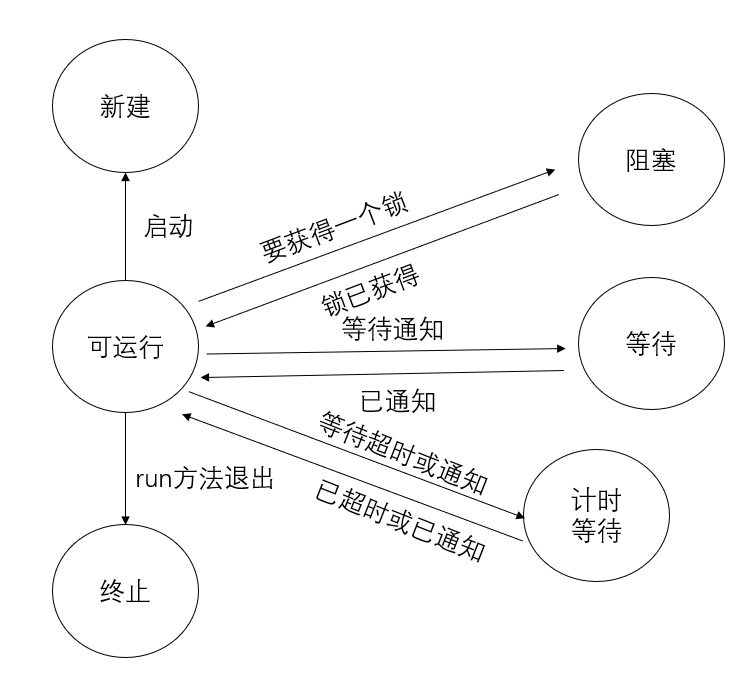

多任务（multitasking）
并发执行的进程数目不受限于CPU数目。操作系统会为每个进程分配CPU时间片，给人并行处理的感觉。
每个任务在一个线程（thread）中执行，线程是控制线程的简称。
如果一个程序可以同时运行多个线程，则该程序是多线程（multithreaded）的
多进程和多线程区别
- 每个进程拥有自己的一整套变量，而线程则共享 数据
- 共享变量使得线程间通信比进程间通信更有效、更容易。
- 创建和撤销一个线程比启动一个新进程的开销要小得多
线程
1 | //某个类的实例想在一个线程中被执行，必须实现Runnable接口 |
将执行这个任务的代码放入一个类的run方法，同时这个类要实现Runnable接口
1 | Runnable r = new Runnable() { |
由于Runnable是一个函数式接口，所以可以用lambda表达式创建实例
1 | Runnable r = () -> { |
启动线程
1 | Thread thread = new Thread(r); |
完整代码
1 | Runnable r1 = () -> { |
输出
r1 0
r2 0
r1 1
r2 1
r2 2
r1 2
一般来说，中断用来请求终止一个线程，相应地，出现InterruptedException异常时，run方法会退出
也可以通过建立Thread类子类来定义线程，因为Thread类实现了Runnable接口
1 | public class Thread implements Runnable |
1 | class MyThread extends Thread |
然后调用start方法。
但是不推荐这种方法，应当把要并行运行的任务与运行机制解耦合
注意
不要直接调用Thread类或Runnable对象的run方法。直接调用run方法会在同一个线程中执行这个任务，而没有启动新的线程。应当调用Thread.start方法
线程状态
线程可以有6种状态
- New 新建
- Runnable 可运行
- Blocked 阻塞
- Waiting 等待
- Timed waiting 计时等待
- Terminated 终止
确定一个线程的当前状态：调用getState()方法
新建线程 New
用new操作符创建一个新线程，如new Thread(r)
线程还没开始运行，它的状态是新建（new）的
在线程运行之前还有一些基础工作要做
可运行线程 Runnable
线程处于可运行状态有两种情况
- 一个可运行的线程可能正在运行
- 一个可运行的线程可能没有运行
一旦调用start方法，线程就处于可运行（runnable）状态
一个线程开始运行后，不一定始终保持运行
- 有时需要暂停，让其他线程有机会运行
线程调度的细节依赖于操作系统提供的服务
- 抢占式调度系统给每个可运行线程一个时间片来执行任务
- 时间片用完后，操作系统会剥夺该线程的运行权，让另一个线程一个机会来运行，操作系统会考虑优先级
- 所有的桌面以及服务器操作系统使用抢占式调度
- 协作式调度
- 一个线程只有在调用
yield方法或者被阻塞或等待时，才失去控制权 - 手机等小型设备
- 一个线程只有在调用
多个处理器的机器上，可以有多个线程并行运行
当线程的数目多于处理器的数目，调度器还是需要分配时间片
1 | //public class Thread implements Runnable |
阻塞和等待线程
当线程处于阻塞或等待状态时，它暂时是不活动的
- 它不运行任何代码
- 消耗最少的资源
要由线程调度器重新激活这个线程。具体细节取决于它是怎样到达非活动状态的
- 当一个线程试图获取一个内部的对象锁（注意区别于
java.util.concurrent库中的Lock）,而且这个锁（内部的对象锁）目前被其他线程占有，该线程就会被阻塞。- 当所有的线程都释放了这个锁，并且线程调度器允许该线程持有这个锁，它将变成非阻塞状态
- 当线程等待另一个线程通知调度器出现一个条件时，这个线程会进入等待状态
- 调用
Object.wait方法或Thread.join方法 - 或者是等待
java.util.concurrent库中的Lock或Condition时
- 调用
- 调用有超时参数的方法会让线程进入计时等待（timed waiting）状态
- 这个状态一直保持到超时期满或者接收到适当的通知
- 带有超时参数的方法
Thread.sleep- 计时版的
Object.wait、Thread.join、Lock.trylock以及Condition.await
当一个线程处于阻塞或等待时（终止时），就可以调度另一个线程运行。
当一个线程被重新激活（例如因为超时期满或成功获得了一个锁），调度器检查它是否具有比当前运行线程更高的优先级，如果有，调度器会剥夺某个当前运行线程的运行权，选择一个新线程运行。
阻塞状态与等待状态并没有太大区别

终止线程
线程会由于以下原因之一而终止
run方法正常退出，线程自然终止- 因为一个没有捕获的异常终止了
run方法，使线程意外终止
可以调用线程的stop方法杀死线程，该方法会抛出ThreadDeath错误对象，但该方法已经弃用
线程属性
中断线程
注意
- 区别中断（interrupt）和终止（terminated）两个概念
- 中断interrupt
- 我认为书上想表达的意思是，interrupt一个线程，不一定会使得该线程终止
- 我认为这是翻译背的锅
线程终止的情况
线程的**
run方法执行方法体中的最后一条语句后再执行return语句返回时**出现了方法中没有捕获的异常时
stop方法，但是已经被废弃了。废弃原因如下
* @deprecated This method is inherently unsafe. Stopping a thread with * Thread.stop causes it to unlock all of the monitors that it * has locked (as a natural consequence of the unchecked * <code>ThreadDeath</code> exception propagating up the stack). If * any of the objects previously protected by these monitors were in * an inconsistent state, the damaged objects become visible to * other threads, potentially resulting in arbitrary behavior. Many * uses of <code>stop</code> should be replaced by code that simply * modifies some variable to indicate that the target thread should * stop running. The target thread should check this variable * regularly, and return from its run method in an orderly fashion * if the variable indicates that it is to stop running. If the * target thread waits for long periods (on a condition variable, * for example), the <code>interrupt</code> method should be used to * interrupt the wait. * For more information, see * <a href="{@docRoot}/../technotes/guides/concurrency/threadPrimitiveDeprecation.html">Why * are Thread.stop, Thread.suspend and Thread.resume Deprecated?</a>. */1
2
3
4
5
6
7
8
9
- 总而言之就是不安全
`interrupt`方法可以**<u>请求</u>终止**一个**线程**
**`Thread.java`源码中有关`interrupt`的方法**
```Java
public void interrupt()
1 | public static boolean interrupted() { |
1 | public boolean isInterrupted() { |
1 | private native boolean isInterrupted(boolean ClearInterrupted); |
- 对一个线程调用
interrupt方法时，会设置线程的中断状态。 - 每个线程都有个中断状态的
boolean标志。 - 每个线程都应该不时地检查这个标志，判断线程是否被中断
1 | /** |
想要得出是否设置中断状态。
调用静态的
Thread.currentThread()方法获得当前线程，然后调用isInterrupted方法while(!Thread.currentThread().isInterrupt() && more work to do){ do more work }1
2
3
4
5
6
7
8
9
10
11
12
13
14
15
16
17
18
19
20
21
22
23
24
25
26
27
28
29
30
31
如果线程**被阻塞**，就**无法检查**中断状态，就需要引入`InterruptExcption`异常
- 当一个被`sleep`或`wait`调用**阻塞**的线程上调用`interrupt`方法时，那个**阻塞调用（即sleep或wait调用）**将被一个`InterruptException`**异常中断**
- 有一些阻塞I/O调用不能被中断，对此应该考虑选择可中断的调用
没有要求被中断的线程应该终止。中断一个线程只是引起它的注意。
被中断的线程可以决定如何响应中断。
- 对于某些重要线程，应该处理这个异常，然后继续执行
- 对于希望将中断解释为一个终止请求的线程，在其`run`方法有如下形式
- ```Java
Runnable r = () -> {
try{
...
while(!Thread.currentThread().isInterrupt() && more work to do){
do more work
}
}
catch(InterruptException){
// thread was interrupted during sleep or wait
}
finally{
cleanup, if required
}
//exiting the run method terminates the thread
}如果在每次工作迭代后都调用
sleep方法，那么isInterrupt方法没有必要也没有用处。如果设置了中断状态，此时如果调用
sleep，线程不会休眠（即不获得sleep效果），而是清除中断状态，并抛出InterruptException因此如果循环调用了
sleep就不要检测中断状态，而应当捕获InterruptException异常Runnable r = () -> { try{ ... while(more work to do){ do more work Thread.sleep(delay) } } catch(InterruptException){ // thread was interrupted during sleep } finally{ cleanup, if required } //exiting the run method terminates the thread }1
2
3
4
5
6
7
8
9
10
11
12
13
14
15
16
17
> `interrupt`方法是一个静态方法，它**检查**当前线程**是否被中断**。而且调用`interrupted`方法会**清除**该线程的**中断状态**
> `isInterrupted`是一个实例方法，可以检查是否有线程被中断，调用这个方法不会改变中断状态
**不要**在代码底层**抑制**`InterruptedException`**异常**
合理方法
- 在`catch`子句中调用`Thread.currentThread().interrupt()`来设置中断状态
- ```Java
void mySubTask(){
...
try{sleep(delay);}
catch(InterruptException e){Thread.currentThread().interrupt();}
}
用
throws InterruptException标记方法void mySubTask() throws InterruptException{ ... sleep(delay); ... }1
2
3
4
5
6
7
8
9
### 守护线程 daemon thread
守护线程的**唯一用途**是为**其他**线程**提供服务**
通过调用
```Java
t.setDaemon(true);
将一个线程转换成守护线程
举例
- 计时器线程定时发送“计时器滴答”信号给其他线程，所以是守护线程
- 清空过时缓存项的线程也是守护线程
只剩下守护线程时，虚拟机就会退出
线程名
默认情况下，线程命名为”Thread-0”、”Thread-1”
通过setName方法为线程设置任何名字：
1 | Thread t = new Thread(runnable); |
在线程转储时可能很有用
未捕获异常的处理器
线程的run方法不能抛出任何检查型异常（检查型异常例如IOException），但是非检查型异常（派生于Error的例如系统资源耗尽，或派生于RuntimeException的例如数组访问越界）可能会导致线程终止，这种情况下，线程会死亡
对于可以传播的异常，并没有任何catch子句，实际上，线程死亡之前，会将异常传递到一个用于处理非捕获异常的处理器
这个处理器必须属于一个实现了Thread.UncaughtExceptionHandler接口的类
1 |
|
可以通过setUncaughtExceptionHandler方法为任何线程安装一个处理器
1 | public void setUncaughtExceptionHandler(UncaughtExceptionHandler eh) { |
也可以用Thread类的静态方法SetDefaultUncaughtExceptionHandler为所有线程安装一个默认的处理器
1 | public static void setDefaultUncaughtExceptionHandler(UncaughtExceptionHandler eh) { |
1 | // null unless explicitly set |
- 如果没有安装默认处理器，则默认处理器为
null - 没有为单个线程安装处理器，那么处理器就是该线程的
ThreadGroup对象
ThreadGroup类实现了Thread.UncaughtExceptionHandler接口
1 | public class ThreadGroup implements Thread.UncaughtExceptionHandler |
1 | public void uncaughtException(Thread t, Throwable e) { |
ThreadGroup的uncaughtException方法执行一下操作
- 如果该线程组有父线程组，那么调用父线程组的
uncaughtException方法 - 否则，如果
Thread.getDefaultExceptionHandler方法返回一个非null处理器，则调用该处理器 - 否则，如果
Throwable是一个ThreadDeath的一个实例，什么都不做 - 否则，将线程的名字以及
Throwable的战轨迹输出到System.err
1 | /** |
线程组是可以一起管理的线程的集合。
默认情况下，创建的所有线程都属于同一个线程组，但是也可以建立其他的组
线程优先级
在没有使用操作系统线程的Java早期版本中，线程有优先级可能很有用。不过现在不要使用线程优先级了
在Java中，每个线程有一个优先级
默认情况下，一个线程会继承构造它的那个线程的优先级
通过setPriority方法来提高或降低一个线程的优先级
1 | public final void setPriority(int newPriority) { |
1 | /** |
每当线程调度器有机会选择新线程时，它首先选择具有较高优先级的线程
但是，线程优先级高度依赖于系统。当虚拟机依赖于宿主机平台的线程实现时，Java线程的优先级会映射到宿主机平台的优先级
同步
静态条件（race condition）：两个或两个以上的线程需要共享对同一数据进行存取，如果两个线程分别对这一共享数据进行修改，那么两个线程会相互覆盖，结果取决于两个线程访问的次序。
需要通过同步存取来避免多线程破坏共享数据
示例代码
Bank.java
1 | public class Bank { |
UnsynchBankTest.java
1 | public class UnsynchBankTest { |
输出结果
1 | ... |
可以发现，对于Total Balance的值会发生改变（按道理应该保持100000）
竞态条件详解
假设两个线程同时指令
accounts[to] += amount;
由于这条指令不是原子操作，可能如下处理
- 将
accounts[to]加载到寄存器 - 增加
amount - 将结果写回
accounts[to]
如果第一个线程在执行步骤1、2后，运行权被抢占，而第二个线程被唤醒，更新数组同一个元素后，第一个线程被唤醒完成第3步则可能出错
查看执行这个类中每一个语句的虚拟机字节码，以Bank类为例
- 先将当前路径移动到
Bank.java的位置 - 用
javac命令对.java文件进行编译javac .\UnsynchBankTest.java Bank.java
- 用
javap命令对.class文件进行反编译javap -c -v Bank
1 | 21: aload_0 |
可以看到一条命令由多条指令组成，而执行这些指令的线程可以在任何一条指令上被中断
对此，我们需要解决的问题是：能够确保线程失去控制之前，方法已经完成
锁对象
有两种机制可防止并发访问代码块
- Java提供
synchronized关键字来达到这一目标 - Java5引入
ReentrantLock类
synchronized关键字会自动提供一个锁以及相关的条件，对于大多数需要显式锁，这种机制功能强
java.util.concurrent框架为这些基础机制提供单独的类
重入锁 reentrant
可重入锁有
synchronizedReentrantLock
用ReentrantLock保护代码块的基本结构：
1 | class X { |
这结构保证任何时刻只有一个线程进入临界区。一旦一个线程锁定了锁对象（注意主语是线程），其他任何线程都无法通过lock语句。
当其他线程调用lock**时，它们会暂停，直到第一个线程释放这个锁对象（这里指myLock）**
注意
- 要把
unclock操作包括在finally子句中，这一点非常重要。- 如果临界区的代码抛出一个异常，锁必须释放。否则其他线程将永远阻塞。
- 使用锁时，不能使用
try-with-resources语句。- 首先，解锁的方法名不是
close。（这句话的意思要和try-with-resources的特性，try-with-resources会自动释放资源，即调用对应资源的close方法，而可能会认为锁也是一个资源，是否可以用这个语句来自动释放呢？答案是不可以的）即使将锁的unclock方法重命名成close，try-with-resources语句也无法正常工作 - 它（
try-with-resources）首部希望声明一个新变量。但是如果使用一个锁，你可能想使用多个线程共享那个变量（而不是新变量）- 我对于这句话的理解是，
try-with-resources语句在首部声明的变量都是只在这语句块中使用的，使用完就销毁的。而对于一个锁，我们希望的是多个线程，能够抢占这个锁，并且这个锁是同一个对象，而不是各自生成一个新的锁对象。
- 我对于这句话的理解是，
- 首先，解锁的方法名不是
加入可重入锁的Bank.java
1 | public class Bank { |
说明：
- 假设一个线程调用了
transfer，但是在执行结束前被抢占（锁还是在该线程，所以还会继续执行指令）。再假设第二个线程也调用了transfer。由于第二个线程不能获得锁，将在调用lock方法时被阻塞。必须等待第一个线程执行完transfer方法，释放锁后，第二个线程才能开始运行。
注意：
- 每个
Bank对象都有自己的ReentrantLock对象。- 两个线程试图访问同一个
Bank对象，那么锁可以用来保证串行化访问 - 两个线程访问不同的
Bank对象，每个线程会得到不同的锁对象，两个线程都不会阻塞
- 两个线程试图访问同一个
**可重入锁 **
ReentrantLock称为重入锁，因为线程可以反复获得已拥有的锁。
重入锁有一个持有计数（hold count）来跟踪对lock方法的嵌套调用。
线程每一次调用lock方法后都要调用unlock方法来释放锁（一一对应）。
根据这个特性，被一个锁保护的代码可以调用另一个使用相同锁（这里相同的锁指的是同一个锁对象）的方法。
对这句话的理解，就是一个对象（例如一个
Bank实例化的bank对象），这个对象只有维护一个锁对象banklock。当这个锁对象被线程A给占用后（例如在调用transfer，而transfer被banklock给保护），如果这个bank对象中还有其他的方法（例如getTotalBalance）是被banklock这个锁对象给保护的话，那么现在只有线程A可以调用getTotalBalance（因为线程A有锁对象banklock）。即使这个线程A中没有调用getTotalBalance，只调用了transfer方法；其他线程也不能够调用getTotalBalance，必须等到线程A将调用的banklock都释放了，才能够调用getTotalBalance或者transfer。即调用几次释放几次。transfer方法中调用了getTotalBalance方法，此时会继续封锁banklock对象，bankLock对象的持有计数为2。当getTotalBalance方法退出时，持有计数变回1（因为unlock了一次）。当transfer方法退出的时候，持有计数变为0（因为又释放了一次），线程释放锁。
通常我们可能希望保护会更新或检查共享对象的代码块，从而能确信当前操作执行完之后其他线程才能使用同一对象
注意
- 应该确保临界区（即锁保护的代码块）中的代码不要因为抛出异常而跳出临界区。
- 如果在临界区代码块结束之前抛出了异常，
finally子句将释放锁，但是对象可能处于被破坏的状态。
- 如果在临界区代码块结束之前抛出了异常，
1 | * <p>This lock supports a maximum of 2147483647 recursive locks by |
ReentrantLock允许的持有计数最大为2147483647。
公平锁
对于ReentrantLock对象的构造器
1 | /** |
其中ReentrantLock(boolean fair)构造一个采用公平策略的锁。一个公平锁倾向于等待时间最长的线程（队列先进先出）。不过这种公平保证可能严重影响性能。所以在默认情况下，不要求锁是公平的。
公平锁比常规锁要慢很多。
对于要解决的问题有一个特定的理由确实要考虑公平性时，才应使用公平锁。
即使使用公平锁，也无法确保线程调度器是公平的。如果线程调度器选择忽略一个已经为锁等待很长时间的线程，它就没有机会得到公平处理
这篇CSDN上的博客把ReentrantLock讲得很生动轻松学习java可重入锁(ReentrantLock)的实现原理
非公平锁
非公平锁即每个线程在锁是空闲状态下，都有机会抢到锁，而不必照顾等待时间长的线程。例如线程A执行完任务后释放锁，而线程B本来在等待线程A的锁而被阻塞，现在正在被唤醒，在线程B唤醒的过程中，如果来了线程C，那么线程C也有可能获得锁
条件对象
情景：线程A（获得锁对象）进入临界区后，却发现只有满足某个条件之后它才能执行。而通过引入条件对象，让其他线程（线程B）可以获得这个锁对象去执行任务，同时可能线程B的操作能让线程A满足该条件，让线程A能够继续执行任务。
引入条件对象（条件变量（conditional variable））来管理那些已经获得一个锁却不能做有用工作的线程
举例：线程A要进行转账给其他账户，但是该账户的余额不足，因此进行了等待（不满足某个条件），等待其他账户给它进行转账
1 | public void transfer(int from, int to, double amount){ |
由于这个线程刚刚获得了对banklock的排他性访问权，因此别的线程没有存款机会，因此引入条件对象
一个锁对象可以有一个或多个相关联的条件对象。
用
newCondition方法获得一个条件对象。习惯上给每个条件对象一个合适的名字来反映它表示的条件
1 | public class Bank { |
回到举例中：线程A中调用transfer发现了余额不够，因此调用sufficientFunds.await();
- 当前线程现在暂停，并放弃锁。这就允许另一个线程执行，同时我们希望这另一个线程能够增加放弃锁的线程的账户余额（使之满足条件）
等待获得锁的线程和已经调用了
await方法的线程有本质的不同
- 一旦一个线程调用
await方法就进入了这个条件的等待集（wait set）。当锁可用时，该线程并不会变为可运行状态。实际上，它仍保持非活动状态，直到另一个线程在同一条件调用signalAll方法
- 对这句话的理解时：一个线程调用了
await方法后，只有其他的线程在同一条件上调用signalAll或signal方法才可能把这个线程从等待集中取出，否则它将一直处于非活动状态。- 它渴望的是
siganlAll或signal，而不是unclock
当另一个线程完成转账时，应该调用：sufficientFunds.signalAll();
这个调用会重新激活等待这个条件的所有线程。
当这些线程从等待集中移除，它们再次成为可运行的线程，调度器最终将再次将它们激活。同时它们会尝试重新进入该对象。一旦锁可用，它们中的某个线程将从**
await调用返回，得到这个锁，并从之前暂停的地方继续执行**- 对这句话的理解：
signalAll方法会让所有在该条件下的等待集中的线程激活，但是不代表该线程就能立马执行，这些线程也是需要获得该锁对象，并从暂停的地方（await地方）继续执行
- 对这句话的理解：
线程应当再次测试条件。不能保证现在一定满足条件——
signalAll方法仅仅是通知的线程：现在有可能满足条件，值得再次检查条件对这句话的理解：这里有可能满足条件的意思是：可能其他线程执行
signalAll的这个操作时就根本没有使等待集的线程满足条件、也有可能是signalAll方法调用时的时候确实满足了，但是等到等待集的某个线程获得锁对象的时候，就又不满足了。因为我们需要确保这个等待集的线程确实能够从
await中解脱出来，因此我们需要将await调用放在循环中，来保证signalAll后能够再次检查while(!(OK to process)){ condition.await(); }1
2
3
4
5
6
7
8
9
10
11
12
13
14
15
16
17
18
19
20
21
22
23
24
25
26
27
28
29
30
31
当一个线程调用`await`时，它没有办法重新自行激活。它寄希望于其他线程。如果没有其他线程来重新激活等待的线程，它就永远不在运行。
因此最终需要**某个其他**线程调用`signalAll`方法
**死锁（deadlock）**现象有可能发生：所有其他线程都被阻塞，最后一个活动线程调用了`await`方法，但没有先解除另外某个线程的阻塞。此时没有线程可以接触其他线程的阻塞状态，程序永远挂起。
**调用`signalAll()`方法的时机**
只要一个对象的状态有变化而且有利于等待的线程，就可以调用`signalAll`
- 例如一个账户的余额发生改变时，就应该给等待线程一个机会来检查余额。
- 在完成转账的时候，调用`signalAll`方法
- ```Java
public void transfer(int from, int to, double amount){
banklock.lock();
try{
while(accounts[from] < amount){
sufficientFunds.await();
}
// transfer funds
...
// 转账完成
sufficientFunds.signalAll();//说不定给等待集的线程转了钱，都通知看看
}
finally {
banklock.unlock();
}
}
signalAll调用不会立即激活一个等待线程，它只是解除等待线程的阻塞，使这些线程可以在当前线程释放锁之后竞争访问对象
signal方法
signal方法只是随机选择等待集中的一个线程，并解除这个线程的阻塞状态。
这比解除所有线程的阻塞更高效，但也存在危险。
如果随机选择中的线程发现自己仍然不能运行，它就会再次阻塞。如果没有其他线程再次调用signal，系统就会进入死锁
注意
只有当线程拥有一个条件的锁时，它才能在这个条件上调用
await、signalAll、signal
锁和条件小结
- 锁用来保护代码片段，一次只能由一个线程执行被保护的代码。
- 锁可以管理试图进入被保护代码段的线程
- 一个锁可以由一个或多个相关联的条件对象
- 每个条件对象管理那些已经进入被保护代码段但不能运行的线程
1 | public class ReentrantLock implements Lock, java.io.Serializable { |
1 | public abstract class AbstractQueuedSynchronizer |
可以看到ReentrantLock里面维护一个Sync类对象，而Sync对象维护一个先进先出（FIFO）的队列，用来管理线程
可以看到ReentrantLock的newCondition方法是调用Sync类的newCondition方法。
而newCondition方法实例化一个Condition对象，该对象里面也维护着一个队列。在ConditionObject中的Node类和AbstractQueuedSynchronizer中的Node类是一样的。
也可以看到持有计数（hold count）是通过整型变量state来记录的
synchronized关键字
Java语言内置的一种机制
从1.0版本开始，Java中的每个对象都有一个内部锁。
如果一个方法声明时有synchronized关键字，那么对象的锁（内部对象锁）将保护整个方法。
- 要调用这个方法，线程必须获得内部对象锁
因此
1 | public synchronized void method(){ |
等价于
1 | public void method(){ |
内部对象锁只有一个关联条件。
wait方法将一个线程增加到等待集中notifyAll和notify方法可以解除等待线程的阻塞
因此
调用wait等价于intrinsicCondition.await();
调用notifyAll等价于intrinsicCondition.signalAll();
wait、notifyAll以及notify方法是Object类的final方法。
Condition方法必须命名为await、signalAll和signal，从而不会与那些方法发生冲突
使用synchronized关键字实现Bank类
1 | public class Bank { |
解释说明：
- 每个对象都有一个内部锁，并且这个锁有一个内部条件。
- 这个锁会管理试图进入
synchronized方法的线程。 - 这个条件可以管理调用
wait的线程
将静态方法声明为同步（synchronized）也是合法的
- 如果调用这样一个方法，它会获得相关类对象的内部锁
- 例如
Bank类有一个静态同步方法，调用这个方法时，**Bank.class**对象的锁会被锁定 - 因此没有其他线程可以调用这个类的该方法或任何其他同步静态方法
- 因为内部锁也是一个可重入锁，当一个线程获得该锁时，其他线程就不能调用被这个锁保护的代码段
- 例如
1 | public class Object { |
内部锁和条件存在一些限制
- 不能中断一个正在尝试获得该锁的线程
- 不能指定尝试获得锁时的超时时间
- 每个锁仅有一个条件可能是不够的
建议
- 最好既不使用
Lock/Condition，也步使用synchronized关键字- 可以使用java.util.concurrent包中的某种机制，它会处理所有的锁定
- 例如：阻塞队列同步完成一个共同任务的线程、并行流
- 可以使用java.util.concurrent包中的某种机制，它会处理所有的锁定
- 如果
synchronized关键字适合，尽量使用这种 - 需要
Lock/Condition结构提供的额外能力，则使用Lock/Condition
同步块
每个Java对象都有一个锁。
- 线程可以通过调用同步方法来获得锁
- 线程也可以通过进入一个同步块来获得锁
1 | synchronized (obj){ // this is the syntax for a synchronized block |
创建lock对象，只是为了使用每个Java对象拥有的锁
1 | public class Bank { |
客户端锁定（client-side locking）：使用一个对象的锁来实现额外的原子操作
1 | public void transfer(Vector<Double> accounts, int from, int to, double amount) { |
客户端是非常脆弱的，通常不推荐使用
- 上面这代码中，我们不能保证
Vector内部类中，对所有更改方法都使用内部锁
监视器
锁和条件是实现线程同步的强大工具，但严格来讲它们不是面向对象的
监视器（monitor）具有如下特性（这里是监视器的概念，不是Java真实实现的监视器）
- 监视器是只包含私有字段的类
- 监视器类的每个对象有一个关联的锁
- 所有的方法由这个锁锁定
- 如果客户端调用
obj.method()那么obj对象的锁在方法调用开始时自动获得，并且当方法返回时自动释放该锁 - 因为所有的字段时私有的，这样的安排可以确保一个线程处理字段时，没有其他线程能够访问这些字段
- 如果客户端调用
- 锁可以有任意多个相关联的条件
Java监视器的早期版本只有单一条件，而不使用任何显式的条件变量
await accounts[from] >= amount
- 盲目地重新测试条件是低效的
- 利用显式的条件变量解决这个问题：每个条件变量管理单独的一组线程
Java以不太严格的方式采用监视器概念
- Java中的每一个对象都有一个内部锁和一个内部条件。
- 如果一个方法用
synchronized关键字声明，则它表现得就像一个监视器方法 - 可以通过调用
await、notify、notifyAll来访问条件变量
Java对象不同于监视器的地方，削弱了线程的安全性
- 字段不要求是
private - 方法不要求是
synchronized - 内部锁对客户是可用的
volatile字段
场景：只是为了读写一两个实例字段而使用同步，所带来的开销好像有些划不来
出错地方问题
- 有多处理器的计算机能够暂时在寄存器或本地内存缓存中保存内存值
- 运行在不同处理器上的线程可能看到同一个内存位置有不同值
- 编译器可以改变指令的顺序以使吞吐量最大化
- 编译器不会选择可能改变代码语义的顺序。但编译器认为内存值，只有在代码中有显式的修改指令时才会改变。但是内存值可能被另一个线程改变
使用锁来保护可能被多个线程访问的代码，不存在上述问题。编译器被要求在必要的时候刷新本地缓存来支持锁
volatile关键字为实例字段的同步访问提供一种免锁机制
- 如果声明一个字段为
volatile，那么编译器和虚拟机就知道该字段可能被另一个线程并发更新
1 | private volatile boolean done; |
编译器会插入适当的代码，以确保如果一个线程对done变量做了修改，这个修改对读取这个变量的所有其他线程都可见
- 线程对
volatile关键字修饰的变量进行修改后，要立刻写回主内存中volatile使得该变量的每次修改后，增加了一个内存屏障，保证修改后的值必须刷新到主内存，才能进行内存屏障后续的指令操作
- 线程对
volatile关键字修饰的变量进行读取的时候，要从主内存中读，而不是缓存
注意
volatile变量不能提供原子性（不能保证原子性）
- 不能确保翻转字段中的值。不能保证读取、翻转和写入不被中断
例如 i++，对应指令可以分为load、increment、store、memory barries四个操作。
内存屏障是线程安全的，但是内存屏障之前的指令不是线程安全的
对于自增操作来说，寄存器保存中间值，在没有刷入主内存之前，可能被另外的线程打断，并读取同一个变量进行操作，从而出现了不一致的情况。
final变量
使用锁和volatile修饰符，可以从多个线程安全地读取一个字段
将一个字段声明为final时，也可以安全地访问该共享字段
1 | final HashMap<String,Double> accounts = new HashMap<>(); |
其他线程会在构造器完成构造之后才看到这个accounts变量
如果不使用final，就不能保证其他线程看到的是accounts更新的值，它们可能只是看到null，而不是新构造的HashMap
注意：final不保证map的操作（put，get方法）是线程安全的，如果有多个线程更改和读取这个映射（map），仍需要同步
原子性
java.util.concurrent.atomic包中有很多类使用了很高效的机器级指令来保证其他操作的原子性
死锁
锁和条件不能解决多线程中的死锁问题
线程局部变量
使用ThreadLocal辅助类为各个线程提供各自的实例
解决问题：例如SimpleDateFormat类不是线程安全的，如果多线程并发访问，其内部的数据结构可能会被破坏而结果错误
例如
1 | public static final SimpleDateFormat dateFormat = new SimpleDateFormat("yyyy-MM-dd"); |
多个线程同时调用
1 | String dateStamp = dataFormat.format(new Date()); |
则在同时访问dateFormat对象时可能出错
- 可以通过使用同步，但是开销很大
- 在需要的时候构造一个局部
SimpleDateFormat对象，但是太浪费
解决办法：
为每个线程构造一个实例
1 | public static final ThreadLocal<SimpleDateFormat> dateFormat = |
要访问具体的格式化方法，可以调用
1 | String dateStamp = dateFormat.get().format(new Date()); |
- 在一个给定线程中首次调用
get时，会调用构造器中的lambda表达式。 - 此后的
get方法返回属于当前线程的那个实例
多个线程生成随机数问题：
java.util.Random类是线程安全，但多线程访问需要等待一个共享的随机数生成器，效率低
可以使用
ThreadLocal辅助类，为每个线程提供一个单独的生成器Java7提供一个便利类
int random = ThreadLocalRandom.current().nextInt(upperBound);ThreadLocalRandom.current()返回特定于当前线程的Random类的实例
废弃stop和suspend方法的原因
最初的Java版本定义
stop来终止线程suspend方法来阻塞线程，直到另一个线程调用resume
stop和suspend方法都试图控制一个给定线程，而没有线程的互操作
stop方法
该方法会终止所有未结束的方法，包括run方法。当线程被终止，它会立即释放被它锁定的所有对象的锁。
这会导致对象处于不一致的状态
因此：希望停止一个线程的时候应该中断（intterupt）该线程，被中断的线程可以在安全的时候终止
被停止（stop方法调用）的线程会抛出
ThreadDeath异常，从而退出它调用的所有同步方法。因此这个线程会释放它持有的内部对象锁
suspend方法
suspend方法不会破坏对象，但是会导致死锁
- 用
suspend挂起一个持有锁的线程，那么在线程恢复运行之前这个锁是不可用的。 - 如果调用
suspend的方法线程试图获得同一个锁（被suspend的线程持有的锁），那么程序出现死锁
被挂起的线程等待恢复，将其挂起的线程等待获得锁